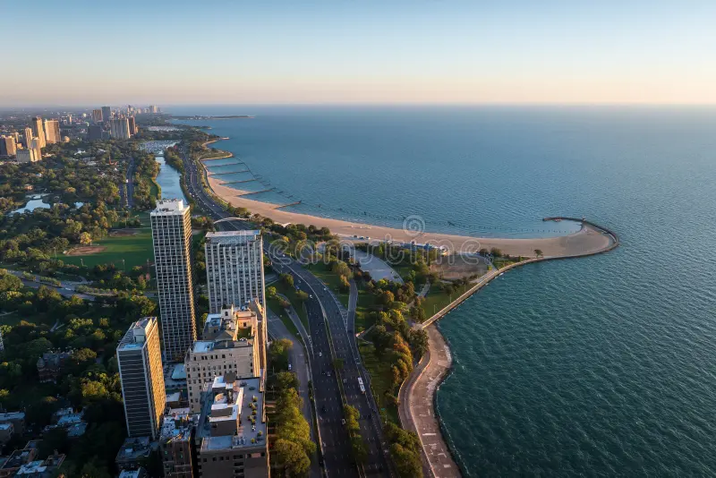

About
The Lake Michigan Effect Lake Michigan acts as a primary thermal regulator for the city, generating localized microclimates that alter temperature and humidity levels. During spring and early summer, the deep water remains cold, generating breeze fronts that keep coastal neighborhoods significantly cooler than inland suburbs. In late autumn and early winter, the lake retains thermal energy, slightly moderating coastal cold snaps while occasionally producing lake-effect precipitation.
